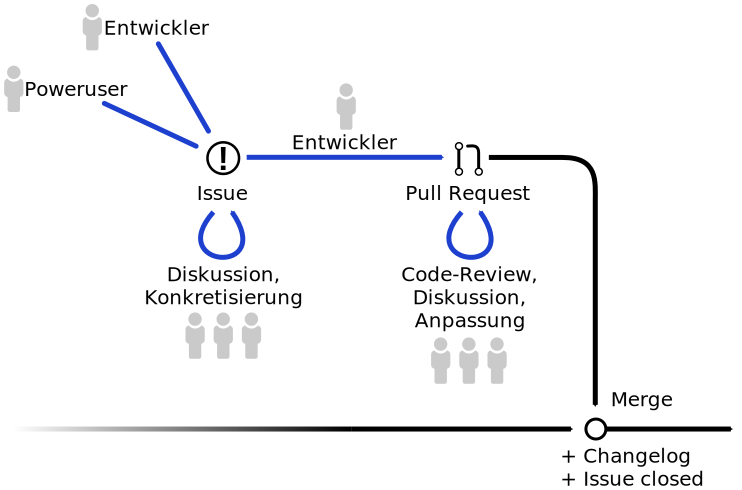

Open Source
Entwicklung
Verstehen, Beitragen, Profitieren.
Was ist Open Source?
Open Source Software (Definition)
- Quellcode in lesbarer und verständlicher Form
- darf beliebig kopiert, verbreitet und genutzt werden
- darf verändert und in der veränderten Form weitergegeben werden
Freie Software (Definition)
- wie oben, aber mit mehr Ideologie
- stärkt die Rechte der Anwender

Warum Open Source?
Der Code ist für Dritte einsehbar.
- Code als Dokumentation / Lernmaterial
- Vertrauen in die Integrität des Codes!
- Unabhängiger Security-Review
Warum Open Source?
Der Code kann von Dritten editiert werden.
- Neue Features
- Bugfixes
- Experimentielle Features
Warum Open Source?
Archivierung / Sicherheit
- Portierung auf andere Systeme
- Keine Aktivierungsserver / auslaufende Unterstützung
- Problemlose Duplikation ganzer Systeme
Open Source
Community Projekt
Organisation
- "normale" Nutzer
- Poweruser
- Entwickler / "Contributors"
- Lead-Entwickler / Maintainer
Infrastruktur
- Git / Mercurial
- Issue-Tracker, Entscheidungsfindungs-Tool
- Wiki (Dokumentation)
- Mailingliste, IRC
Arbeit im Projekt

Einsatz von
Open Source
Software
Lizenzen
| GPL, AGPL: |
Abgeleitete Werke ⇢ gleiche Lizenz Source Code veröffentlichen |
| LGPL: | wie GPL aber LGPL-Module können in proprietärer Software benutzt werden |
| Mozilla PL: | wie GPL, aber "gleiche Lizenz" beschränkt sich auf Dateien bereits unter MPL |
| BSD, MIT, Apache: |
Abgeleitete Werke ⇢ egal Lizenzbedingungen beilegen |
Mitarbeit in der Arbeitszeit
- Neue Frameworks, Konzepte, Code-Styles
- Durch PR-Review bessere Code-Qualität
- Kontakt mit externen Entwicklern
- Mitarbeiter werden Experten für das Projekt
➝ vermarktbar?
Eigene Projekte als
Open Source
Software
Was bringt uns das...
- Gute PR / Gutes Karma
- Wirkt attraktiv auf potentielle Mitarbeiter
- Hohe Transparenz für Kunden
- Community arbeitet mit
- Breites Spektrum an Testumgebungen
Aber unseren Code... verschenken?
- Konkurrent bedient sich am Code?
- Wer kein Geld dafür ausgeben möchte, tut es auch nicht
- Dual Licensing
- Support-Dienstleistungen verkaufen
- Kundenspezifische Features als Auftrag
Kontrolle behalten
- Gute Leute fördern
- Offene Diskussionen, auf Ideen eingehen
- Forks sind gut. Der Code kommt zurück.
Weiterführende Links
Vielen Dank!
Fragen?
timo.scheffler@skillworks.de
(Folien auf: https://github.com/Faldrian/FOSSPresentation)